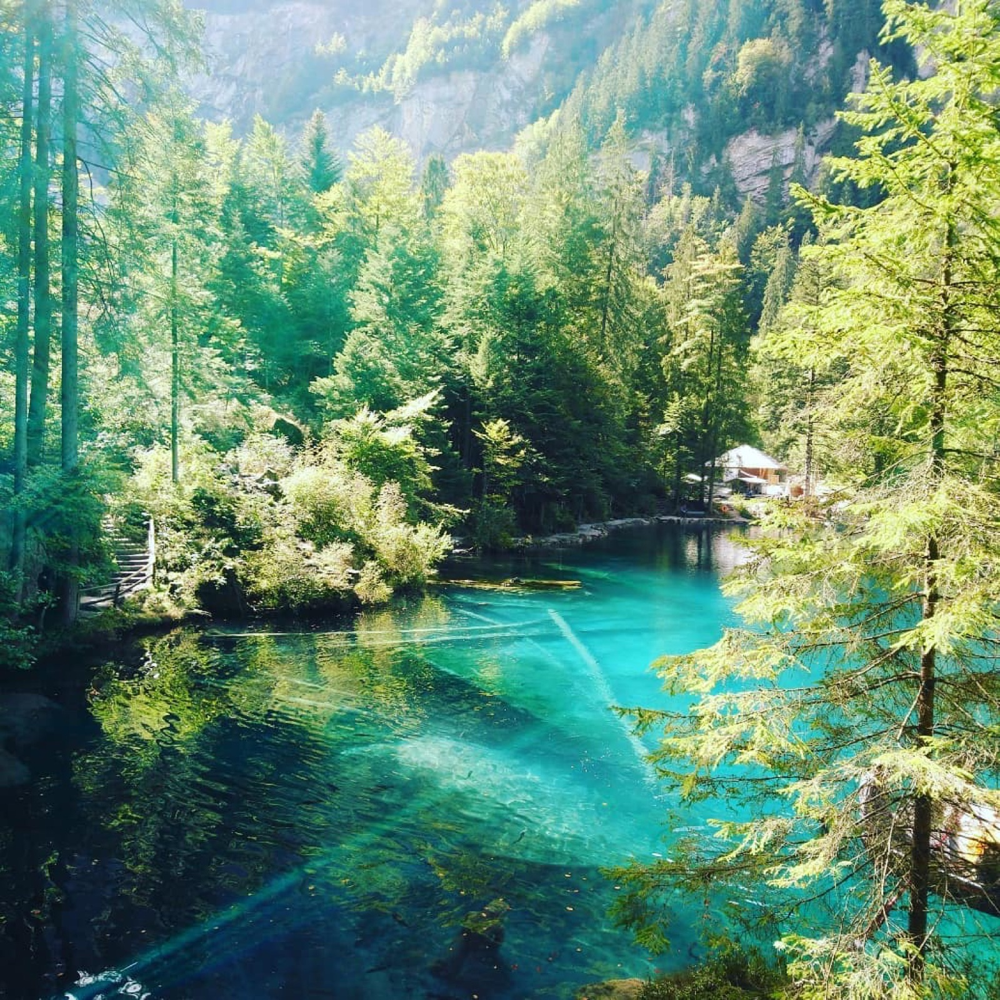
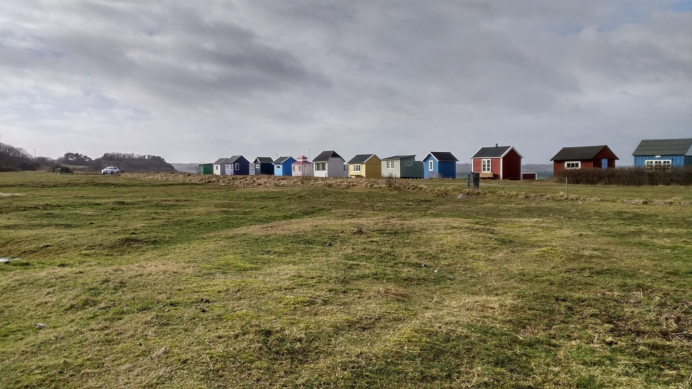
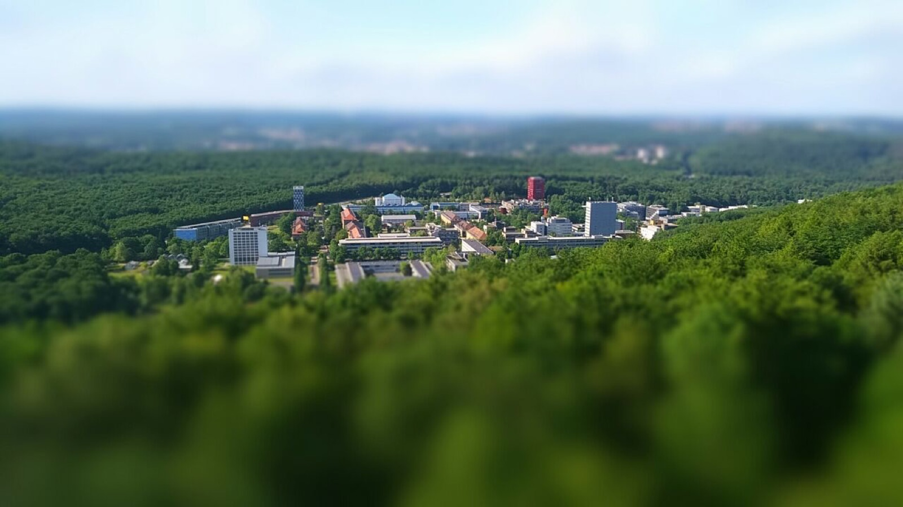
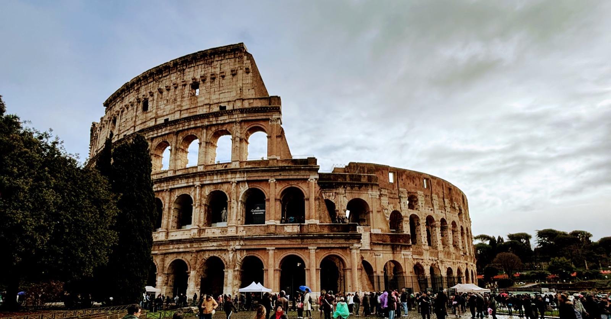
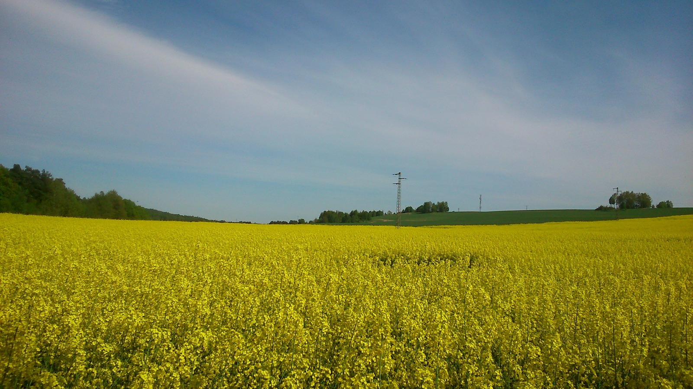

The places that have shaped me — it began in the small towns of Madhya Pradesh, India, ran through the rush of Mumbai, and over the years reached the edge of the Alps and the spires of Oxford. Each one left something behind, and they all live somewhere in how I think.
Every city I've called home — across India and Europe.
When I step away from the data, you'll usually find me walking along the Rhine, up in the mountains, exploring a new city, meeting new people, cooking something elaborate, or with a book.




